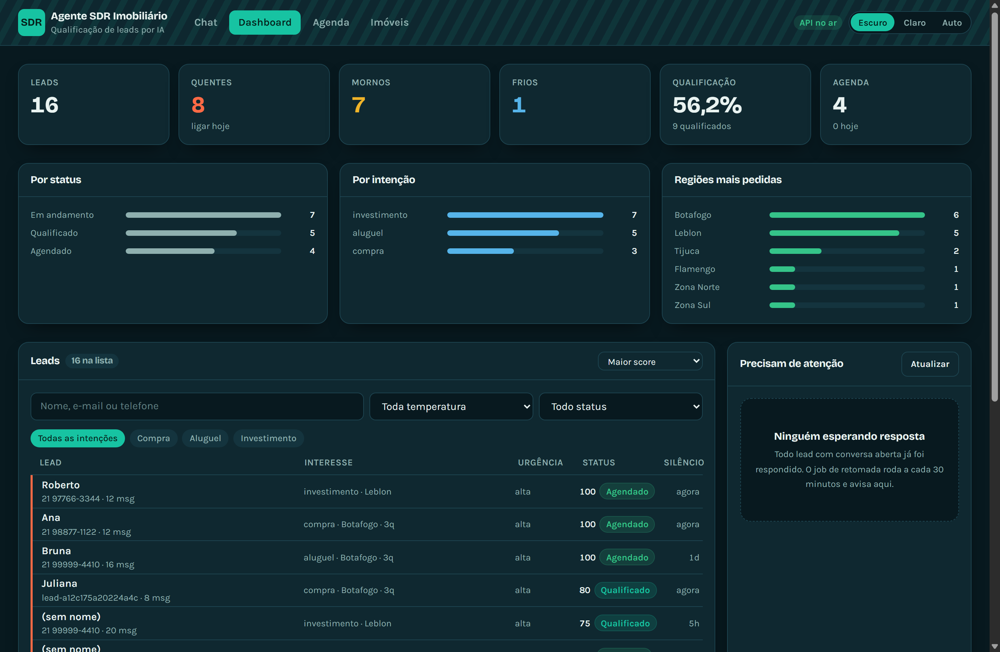
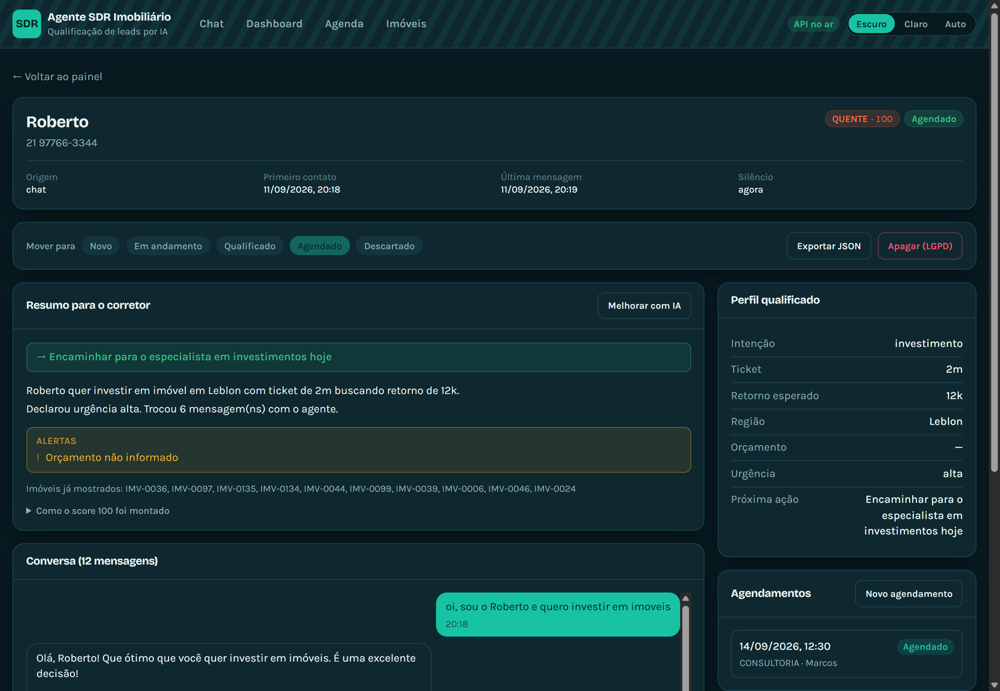
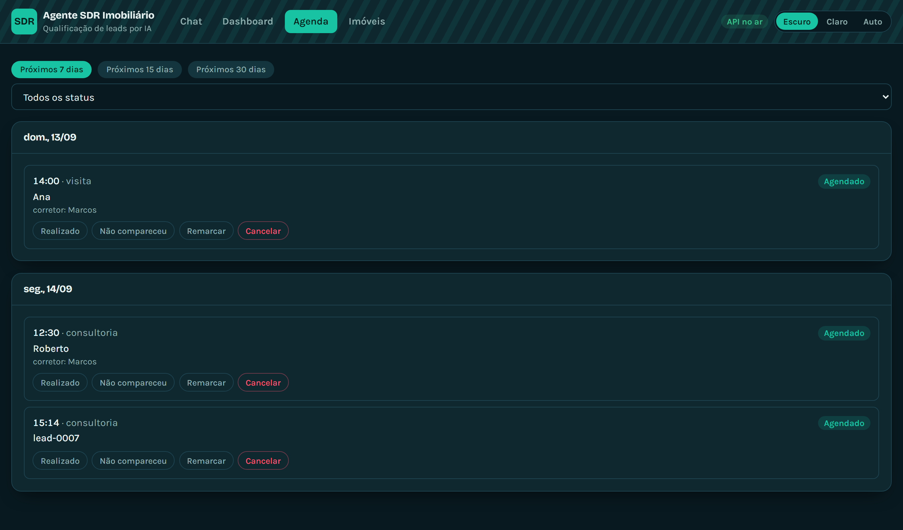
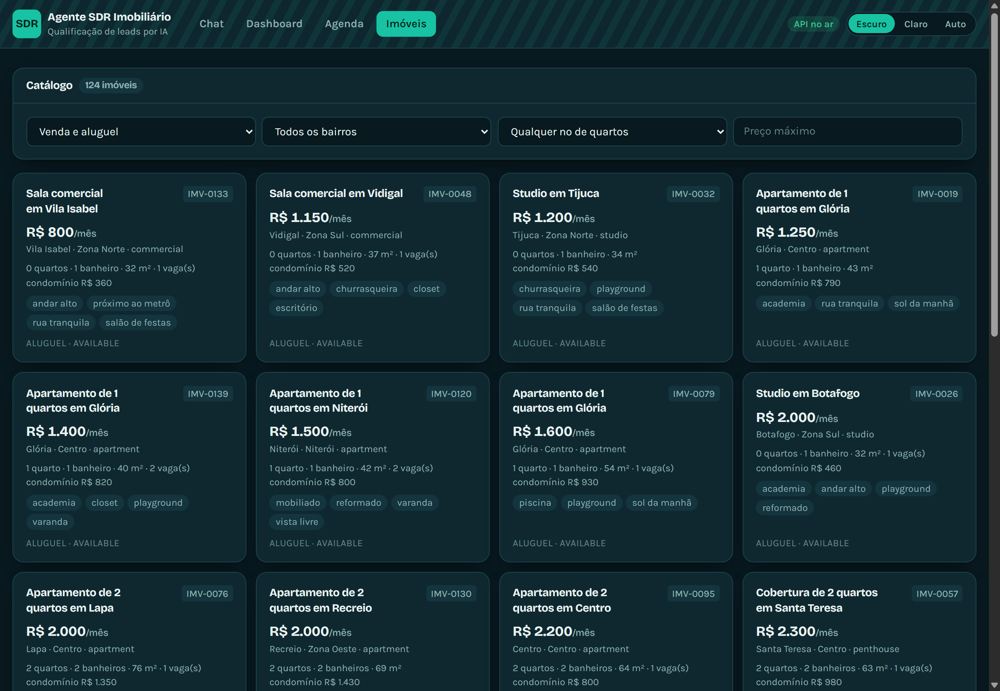

Esta é a seção central do manual.
O agente é um modelo de linguagem. A redação dele varia a cada execução, mesmo com a mesma entrada. Ele pode cumprimentar, elogiar a escolha do bairro, juntar duas perguntas numa frase, inverter a ordem de duas frases. Nada disso é defeito.
O que não varia, porque não depende do modelo:
Essas sete coisas são decididas por código, não pelo modelo. São elas que você deve observar.
A intenção é o primeiro campo da ordem de coleta, e é ela que decide todo o resto do funil. Por isso vale começar por uma frase que deixe a intenção clara. Dali em diante, responda naturalmente, do seu jeito.
| Caminho | Frase de partida |
|---|---|
| Compra | Oi, quero comprar um apartamento |
| Aluguel | Oi, estou procurando um apartamento para alugar |
| Investimento | Oi, quero investir em imóveis para alugar |
Ela tem a palavra “alugar” dentro, e mesmo assim a intenção correta é investimento. Ali, “alugar” diz o que a pessoa vai fazer com o imóvel, não por que ela está procurando. Quem procura para morar não fala em investir. Vale observar essa etiqueta com atenção.
As ordens de coleta são diferentes por intenção, e essa diferença é uma das coisas mais importantes para observar.
| Ordem | Campo | Como a pergunta costuma soar |
|---|---|---|
| 1 | Intenção | comprar, alugar ou investir? |
| 2 | Região | qual bairro ou região? |
| 3 | Quartos | quantos quartos? |
| 4 | Faixa de preço | qual orçamento, ou valor do aluguel? |
| 5 | Urgência | para quando precisa? |
| 6 | Telefone | qual o telefone com DDD? |
| Ordem | Campo | Como a pergunta costuma soar |
|---|---|---|
| 1 | Intenção | confirmar que é investimento |
| 2 | Ticket de investimento | quanto pretende aplicar? |
| 3 | Retorno esperado | quanto espera receber, em % ao ano ou R$ por mês? |
| 4 | Região | qual bairro ou região? |
| 5 | Urgência | para quando pretende investir? |
| 6 | Telefone | qual o telefone com DDD? |
Quem investe decide por ticket e retorno, e perguntar quantos quartos ele quer é a pergunta errada, que queima a credibilidade da conversa. Se você vir o agente perguntando quartos a um investidor, isso é um defeito, e vale reportar.
Nome e e-mail não são perseguidos por nenhum dos dois caminhos. Se você se apresentar, o agente usa o nome. Se não, ele não cobra.
Use esta lista como roteiro. Ela vale para qualquer redação que a IA escolher.
Estas situações mostram decisões de projeto que não aparecem numa conversa tranquila.
| Escreva isto | E observe |
|---|---|
550 quando ele perguntar quantos quartos |
O perfil não grava 550, e o agente pede de novo. Um número implausível é recusado porque um painel com dado inventado é pior que um painel com campo vazio |
R$ 8.550 na pergunta de quartos |
O valor vira orçamento, não quartos. A forma do que você escreveu manda mais que a pergunta que estava em aberto |
99999-4410, telefone sem DDD |
O agente pede o DDD, e pede só o DDD, sem repetir a pergunta inteira |
| Diga Tijuca, e três mensagens depois diga Botafogo | A etiqueta muda para corrigi, e o painel troca o valor |
não quero mais receber mensagens |
Isso bloqueia o follow-up automático para sempre, mesmo com o consentimento marcado |
quero uma casa em vez de apartamento |
O tipo entra no perfil e a busca passa a trazer casas. Sala comercial deixa de aparecer para quem falou em quartos |
Antes de concluir que é defeito, confira três coisas:
Se as três respostas forem “sim, funcionou” e a frase ainda assim estiver
ruim, aí sim vale anotar: é um problema de prompt, e o lugar dele é
ai-core/src/agent.py, na constante SYSTEM_PROMPT.

| Indicador | O que conta |
|---|---|
| Leads | Total de leads na base |
| Quentes | Nota igual ou maior que 70 |
| Mornos | Nota entre 40 e 69 |
| Frios | Nota abaixo de 40 |
| Qualificação | Percentual de leads que chegaram a qualificado |
| Agenda | Agendamentos próximos, e quantos são hoje |
Por status mostra em que ponto do funil os leads estão. Por intenção mostra a divisão entre compra, aluguel e investimento. Regiões mais pedidas mostra a demanda por bairro, e para uma imobiliária esse é o gráfico que diz onde vale captar imóvel novo.
Cada linha tem uma faixa colorida na borda esquerda, que é a temperatura. O corretor varre trinta leads pela cor e só lê a linha onde vai parar. A lista tem busca por nome, e-mail ou telefone, filtro por temperatura, status e intenção, e ordenação por nota, silêncio ou data.
A coluna Silêncio é quanto tempo faz desde a última mensagem daquele lead. É o número que decide o follow-up.
O cartão da direita lista os leads em silêncio há tempo suficiente para merecer uma retomada, do mais silencioso ao menos. Cada item traz o motivo da decisão em texto, como “72h de silêncio, tentativa 2 de 3”, e um botão que gera o texto sugerido.
É o de gerar o texto de retomada, e ele só gasta quando você clica. Todo o resto do painel é calculado por regra.

Esta é a parte que a banca costuma perguntar. A nota vai de 0 a 100, e é a soma de sete fatores:
| Fator | Pontos | Quando conta |
|---|---|---|
| Intenção informada | 20 | O lead disse se compra, aluga ou investe |
| Contato disponível | 20 | Tem telefone ou e-mail |
| Faixa de preço | 15 | Para investidor, conta o ticket no lugar |
| Urgência alta | 15 | O lead declarou pressa |
| Região informada | 10 | |
| Quartos informados | 10 | Para investidor, conta o retorno esperado no lugar |
| Engajado | 10 | O lead trocou três mensagens ou mais |
Contato pesa tanto quanto intenção porque, para um SDR, contato é o produto final: um lead perfeitamente qualificado sem telefone é um lead que o corretor não consegue atender.
A substituição de dois fatores para o investidor existe porque faixa de preço e quartos são exatamente os campos que o funil de investimento não pergunta. Sem essa troca, um investidor que respondesse tudo ficaria com 60 pontos no teto e nunca chegaria a quente.
Desconto por silêncio. Um lead que pontuou 80 e sumiu há um mês não está quente. A nota perde 10 pontos depois de uma semana de silêncio, 25 depois de um mês, e até 40 no limite.
Temperatura: 70 ou mais é QUENTE, de 40 a 69 é MORNO, abaixo de 40 é FRIO.
A ficha mostra os fatores um a um, e não só o número final, porque o corretor precisa saber por que o lead está quente para decidir o que dizer na ligação.
Um parágrafo que diz o que o lead quer, o que ele ainda não informou, e qual é a próxima ação recomendada. Ele é gerado por regra, sem gastar IA; existe um botão para gerar a versão escrita pelo Gemini.
| Situação | Próxima ação |
|---|---|
| Sem intenção conhecida | Descobrir se é compra, aluguel ou investimento |
| Sem contato | Pedir telefone ou e-mail antes de avançar |
| Quente e investidor | Encaminhar para o especialista em investimentos hoje |
| Quente | Ligar hoje e agendar visita |
| Morno | Perseguir os campos que faltam, conforme a intenção |
Mover para muda o status entre novo, em andamento, qualificado, agendado e descartado. Exportar JSON baixa tudo que o sistema guarda daquele lead. Apagar (LGPD) remove o lead, as mensagens, os agendamentos e a memória da IA; pede confirmação, e não tem volta.

Cada item traz hora, tipo (visita, reunião ou consultoria), o lead com link para a ficha, e quatro ações: Realizado, Não compareceu, Remarcar e Cancelar. Remarcar recusa data no passado, igual ao seletor do chat.

São 140 imóveis em 20 bairros do Rio de Janeiro:
| Recorte | Quantidade | Recorte | Quantidade |
|---|---|---|---|
| À venda | 93 | Apartamentos | 83 |
| Para alugar | 47 | Casas | 20 |
| Coberturas | 17 | Studios | 11 |
| Salas comerciais | 9 |
Abra esta tela antes de conversar no chat, para saber o que existe na base. Assim você pede algo que tem estoque, e as sugestões do chat ficam mais interessantes de mostrar.